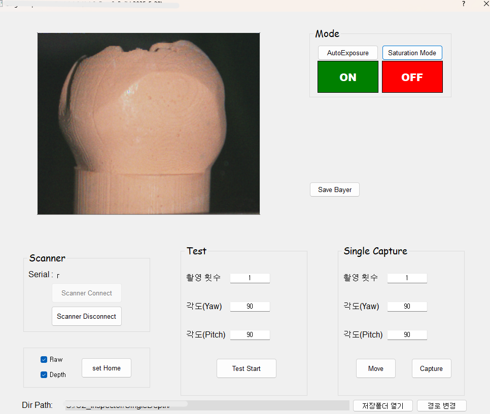
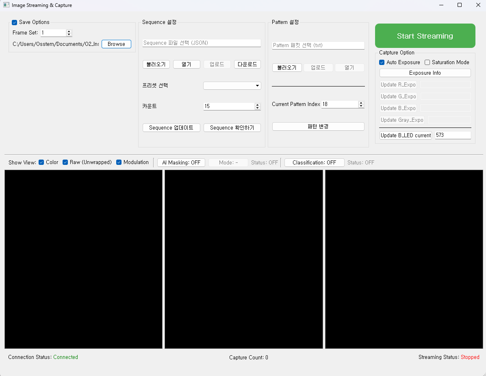
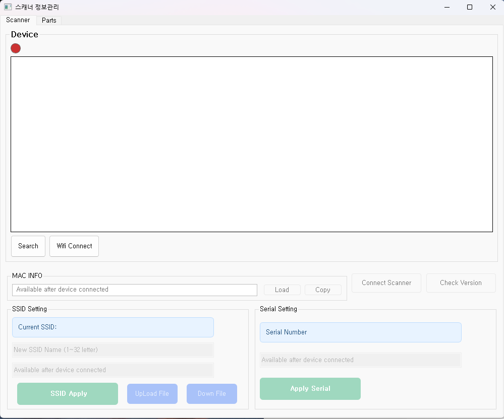
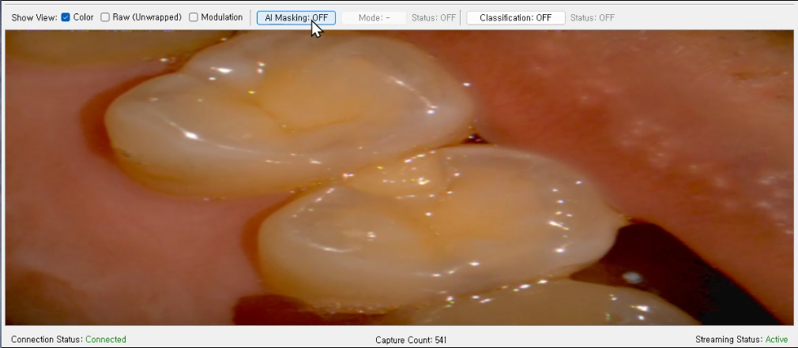
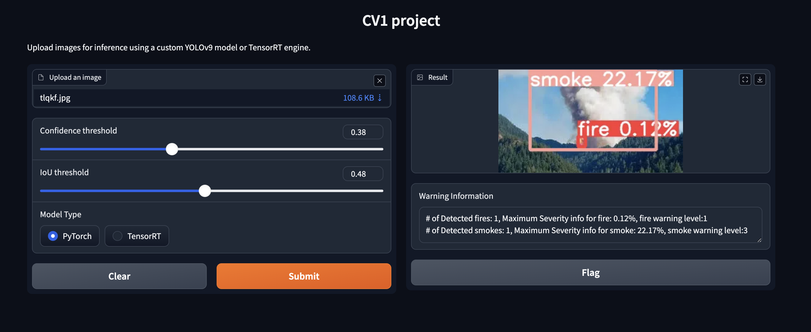
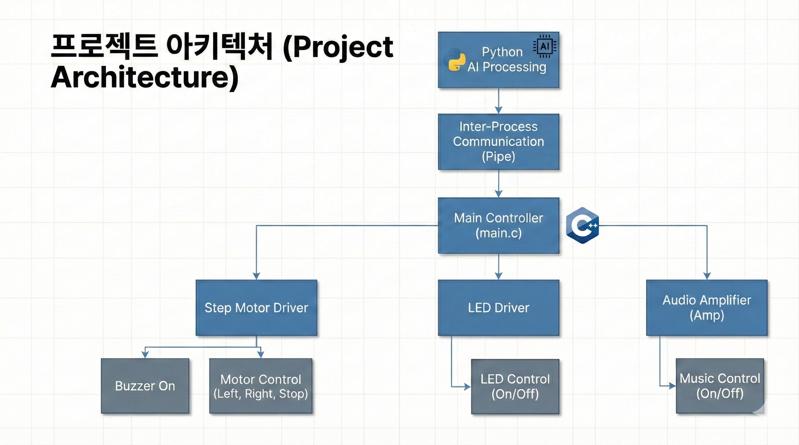
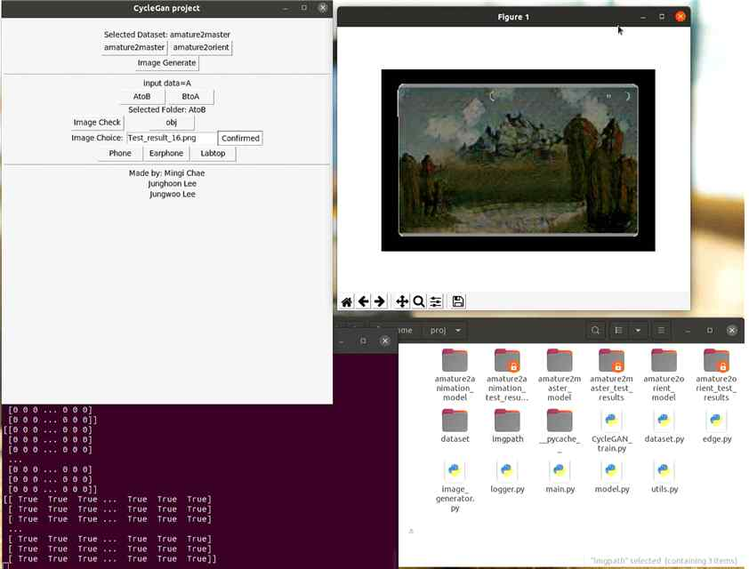

About Me
Introduce
안녕하세요. 전기전자공학을 전공하고 실무에서 구강 3D 스캐너 장비 및 반도체 Reflow 장비의 기능 개발을 수행해 온 개발자 채민기입니다.
C++과 Qt 프레임워크를 기반으로 멀티쓰레드 환경에서의 영상 지연(Delay) 개선, 메모리 최적화 등을 성공적으로 이끌어냈으며, PyTorch 및 YOLO를 활용한 비전 AI 모델을 임베디드 장비(Jetson, RPi)에 최적화하여 탑재한 경험이 있습니다.
단순히 코드만 작성하는 것이 아닌, 장비와 하드웨어에 대한 깊은 이해를 바탕으로 실질적인 성능 한계를 극복하고 사용자 경험(UX)을 향상시키는 솔루션을 구축하는 데 보람을 느낍니다.
Education
건국대학교
전기전자공학부 (학사 졸업)
순천향대학교
전자공학과 (중퇴)
저현고등학교
졸업
Fond Du Lac High School
교환학생 수료 (미국)
Work Experience
피에스케이 홀딩스 (PSK Holdings)
2026.01 - 현재 (연구원)SW G (소프트웨어 그룹)
- Reflow 장비 기능 개발: 반도체 패키징용 Reflow 장비의 메인 제어 시퀀스 및 GUI 기능 추가 개발.
- Reflow 장비 성능 개선: 센서 데이터 수집 주기를 최적화하고 응답 지연 문제를 개선하여 시스템 안정성 제고.
- AI 워크플로우 도입: 사내 개발 프로세스에 AI 어시스턴트 및 자동화 툴을 연동하여 개발 리드타임 감축 시도.
오스템 임플란트 (Osstem Implant)
2025.06 - 2025.12 (계약직)스캐너 연구소
- 스캐너 단위 기능 검사 App 개발: 연구원 및 생산 현장에서 스캐너 캘리브레이션 및 광학 모듈 검사를 수행하는 C++/Qt 애플리케이션 리팩토링 및 기능 추가.
- 스캐너 정보 관리 App 개발: 생산 단계에서 스캐너 내부 파츠(카메라, 보드 등)의 고유 정보 및 보정값을 서버와 연동하여 관리하는 기능 개발.
- 스캐너 연조직 제거 기능 AI 개발: 구강 스캔 중 불필요한 입술, 혀 등의 연조직 데이터를 실시간으로 감지하고 필터링하는 AI 온보드 모듈 연구 개발.
오스템 임플란트 (Osstem Implant)
2025.03 - 2025.06 (인턴)스캐너 연구소
- 스캐너 검사장치 App 개발: 구강 3D 스캐너의 단일 깊이(Single Depth) 해상도 검사를 위한 정밀 모터 회전 장치 제어 소프트웨어 개발.
- AI 연조직 제거 라벨링 및 검수: 인공지능 학습용 데이터 구축을 위한 3D 구강 스캔 원본 데이터 매핑 및 데이터 레이크 검수.
Technical Skills
Programming Languages
System & Frameworks
Tools & Collaboration
Projects

Work구강 3D 스캐너 검사장비 개발
구강 3D 스캐너의 Single Depth 정밀도를 하드웨어 지그와 모터를 통해 검사하는 전용 Qt 기반 GUI 애플리케이션 개발.

Work스캐너 단위 기능 검사 SW 개발
스캐너 내부 센서, LED, 카메라의 기능을 상세 조절하고 모니터링할 수 있는 연구 개발 검증용 유틸리티 개발.

Work스캐너 정보관리 App 개발
스캐너 생산 조립 라인에서 각 파츠의 시리얼 넘버 및 교정값(Calibration data)을 설정 및 관리하는 관리 툴.

Work구강 스캐너 연조직 제거 AI 개선
실시간 3D 스캔 중 발생하는 입술/볼 등 연조직의 불필요한 메쉬 데이터를 감지하고 지우는 AI 모델 경량화 및 툴 체인 구축.

Side드론용 화재 감지 & 분석 시스템
단일 카메라만 장착된 드론 온보드 환경에서 YOLOv9 모델과 Mono Depth Estimation을 적용해 실시간 화재 거리 및 위험도 도출.

Side사용자 트래킹 스마트 캠
라즈베리파이 4 환경에서 객체 인식 AI를 통해 서보 모터를 제어하여 사용자를 실시간 추적하고 제스처를 인식해 작동하는 시스템.

SideAI 활용 케이스 디자인 APP
CycleGAN 기반 이미지 스타일 변환 모듈과 OpenCV Canny Edge 필터를 접목하여 사용자가 케이스 일러스트 디자인을 커스텀할 수 있는 툴.